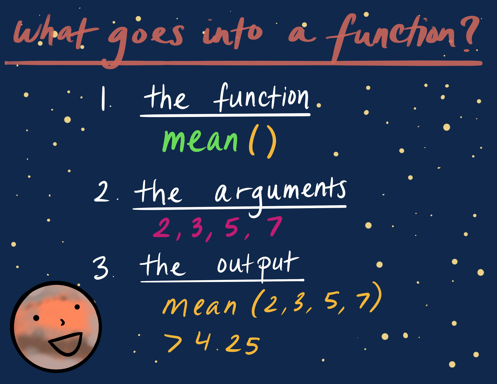
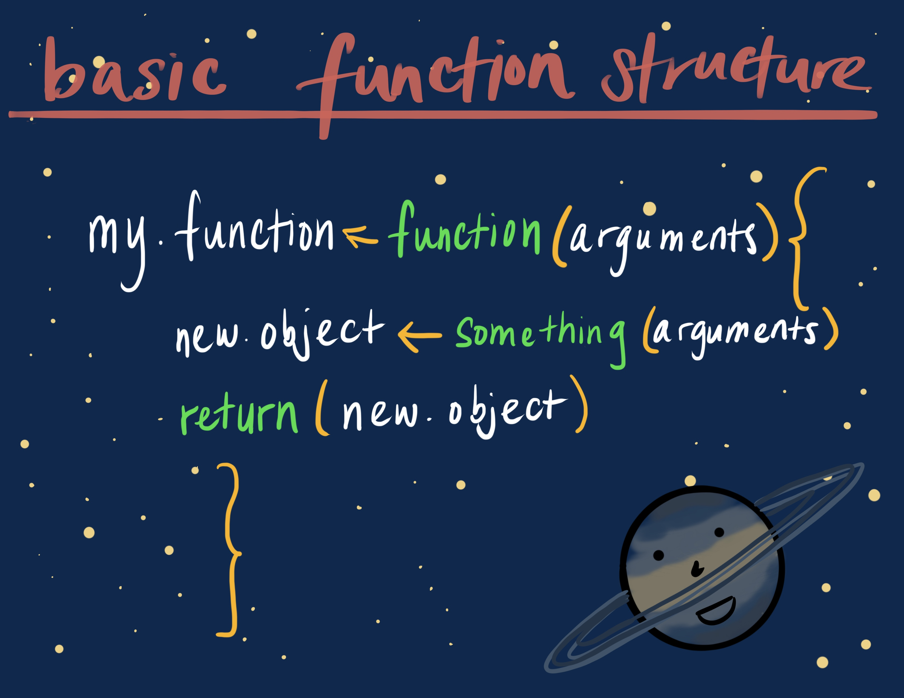

This script was adapted from Tanya Rogers, who adapted it from Umi Hoshijima, who adapted it from Software Carpentry!
This is a short tutorial on writing functions in R by An Bui with help from Juliette Verstaen and Sam Csik.
Source code: Github
Functions allow you to ‘do’ things in R. Using a function has 3 basic components:

For example:
mean() is a function that lets you take the mean of the input.We’ll create some data called dat and use mean() to calculate the mean:
dat <- c(3, 5, 6, 9)dat <- c(3, 5, 6, 9)plot() is a function that allows you to make a plot, and the arguments lets you customize that plot.We’ll make some more fake data called yaxis, and then use plot() to make a plot of dat on the x-axis and yaxis on the y-axis.
yaxis <- sqrt(dat) + 3dat <- c(3, 5, 6, 9)
yaxis <- sqrt(dat) + 3plot(x = dat, y = yaxis)Sometimes R doesn’t have the function you want. That’s ok, because you can write your own! The function called function() lets you write a function. The basic structure reflects function components:

Let’s put that into practice by writing a function to convert temperature values!
The US uses fahrenheit, bleh. Let’s convert that into celsius. The formula for converting fahrenheit into celsius is:
\(C = \frac{F-32}{1.8}\)
And the formula for converting celsius into fahrenheit is:
\(F = C*1.8 + 32\)
We can write a function called f_to_c that converts fahrenheit to celsius.
f_to_c <- function(x) {
convert <- (x - 32)/1.8
return(convert)
}Yay! Now, we can see what 78 fahrenheit is in celsius.
f_to_c <- function(x) {
convert <- (x - 32)/1.8
return(convert)
}The curly brackets in functions are really important for making sure the function code actually works. You can save yourself a headache when you’re writing a function if you immediately hit enter a bunch of times after opening up your brackets. After you’re done writing your function, you can delete all the extraneous space. This ensures that you’re not accidentally deleting your brackets!
Try writing a function called c_to_f that converts celsius to fahrenheit! Remember, the formula is:
\(C*1.8 + 32 = F\)
c_to_f <- function(x) {
convert <- x*1.8 + 32
return(convert)
}And then, try using your function to convert 35 celsius into fahrenheit.
c_to_f <- function(x) {
convert <- x*1.8 + 32
return(convert)
}c_to_f(35)Let’s say that we want to convert between celsius and fahrenheit, but we don’t want to have two separate functions for each. We can write a function that uses conditionals, which tell our code to execute different actions depending on whether a condition is true or false. To do so, we can incorporate if() or if/else() statements within our function.
In order to wrap our heads around this, let’s think of the functions we just wrote, f_to_c() and c_to_f(). We can put all of the components of those functions into one, and designate arguments for switching between each conversion. It’s like compressing a bunch of different operations (the conversion) into one thing (the function), and calling the right conversion every time you wanted to use the function (by using the arguments).
Here, we’ll use the function() structure to make a function called temp.conv that converts between celsius and fahrenheit. Inside the function, we’ll use if() statements to switch between all those conversion equations. The if/else() statement allows us to say:
- If the inputs are celsius and fahrenheit, then use this conversion: \(x*1.8 +32\). else…
- If the inputs are fahrenheit and celsius, then use this conversion: \(\frac{x-32}{1.8}\). else…
- If the inputs are neither fahrenheit or celsius, then return NA and give us a warning message to let us know something is wrong (this last step is optional, but can really help to troubleshoot problematic code).
This is how our function will be set up:
# arguments in: from, to, and the temperature
temp.conv <- function(from, to, x) {
# if `from` is "celsius" and `to` is "fahrenheit", then
if(from == "celsius" & to == "fahrenheit") {
# convert from celsius to fahrenheit
convert <- x*1.8 + 32
# if `from` is "fahrenheit" and `to` is "celsius", then
} else if(from == "fahrenheit" & to == "celsius") {
# convert from fahrenheit to celsius
convert <- (x - 32)/1.8
# if inputs that don't match either of the first two conditionals are supplied, give warning and return NA
} else {
warning("The inputs provided (from = '", from, "' & to = '", to,"') are not as expected. Double check spelling.")
return(NA)
}
# return the converted value
return(convert)
}Let’s try it out! Try converting 25 degrees celsius to fahrenheit.
temp.conv <- function(from, to, x) {
if(from == "celsius" & to == "fahrenheit") {
convert <- x*1.8 + 32
} else if(from == "fahrenheit" & to == "celsius") {
convert <- (x - 32)/1.8
} else {
warning("The inputs provided (from = '", from, "' & to = '", to,"') are not as expected. Double check spelling.")
return(NA)
}
return(convert)
}temp.conv(from = "celsius", to = "fahrenheit", x = 25)But what if we supply arguments that aren’t "celsius" or "fahrenheit"? Try it below.
If you want to incorporate different types of arguments into your function, you can use the or operator: ||
# arguments in: from, to, and the temperature
temp.conv <- function(from, to, x) {
# if `from` is "celsius" or "c", and `to` is "fahrenheit" or "f", then
if(from == "celsius" || from == "c" & to == "fahrenheit" || to == "f") {
# convert from celsius to fahrenheit
convert <- x*1.8 + 32
# if `from` is "fahrenheit" or "f", and `to` is "celsius" or "c", then
} else if(from == "fahrenheit" || from == "f" & to == "celsius" || to == "c") {
# convert from fahrenheit to celsius
convert <- (x - 32)/1.8
# if `from` and `to` don't match any of the expected inputs, give warning and return NA
} else {
warning("The inputs provided (from = '", from, "' & to = '", to,"') are not as expected. Double check spelling.")
return(NA)
}
# return the converted value
return(convert)
}Try using the function with the new arguments!
temp.conv <- function(from, to, x) {
if(from == "celsius" || from == "c" & to == "fahrenheit" || to == "f") {
convert <- x*1.8 + 32
} else if(from == "fahrenheit" || from == "f" & to == "celsius" || to == "c") {
convert <- (x - 32)/1.8
} else {
warning("The inputs provided (from = '", from, "' & to = '", to,"') are not as expected. Double check spelling.")
return(NA)
}
return(convert)
}Try writing a function called planet_awesome() that puts “is awesome!” after each planet name! We’ll set up by making a vector of names of 4 planets:
planets <- c("Mars", "Saturn", "Jupiter", "Mercury")Try writing your function and seeing what the output is!
planet_awesome <- function(x) {
if(class(x) == "character") {
awesome_statement <- paste(x, " is awesome!", sep = "")
return(awesome_statement)
} else {
warning("Whoops! Wasn't expecting that. The inputs should be a character.")
return(NA)
}
}You can use functions to help streamline your workflow. Let’s say we have some data on our planets:
planet_data <- tribble(
~ planet, ~ radius_km, ~ color,
"Mercury", 2440, "grey",
"Venus", 6052, "white",
"Earth", 6371, "blue",
"Mars", 3390, "red",
"Jupiter", 69911, "yellow",
"Saturn", 58232, "yellow",
"Uranus", 25362, "blue",
"Neptune", 24622, "blue"
)Write a function that uses dplyr::filter() to filter planet observations by color and pull out the radius data for each color. Don’t forget to check to see if your function works!
planet_data <- tribble(
~ planet, ~ radius_km, ~ color,
"Mercury", 2440, "grey",
"Venus", 6052, "white",
"Earth", 6371, "blue",
"Mars", 3390, "red",
"Jupiter", 69911, "yellow",
"Saturn", 58232, "yellow",
"Uranus", 25362, "blue",
"Neptune", 24622, "blue"
)color.pull <- function() {
if() {
return()
} else {
warning("Fill in your warning here!")
return(NA)
}
}color.pull <- function(data, color.choice) {
if(color.choice != "grey" || "white" || "blue" || "red" || "yellow" &
class(data) != "tbl_df" || "tbl" || "dataframe") {
warning("Whoops! Wasn't expecting that. Double check your inputs.
Make sure that `data` is a data frame, and `color.choice` is grey, white,
blue, red, or yellow.")
return(NA)
} else {
radius_vector <- data %>%
filter(color == color.choice) %>%
pull(radius_km)
return(radius_vector)
}
}